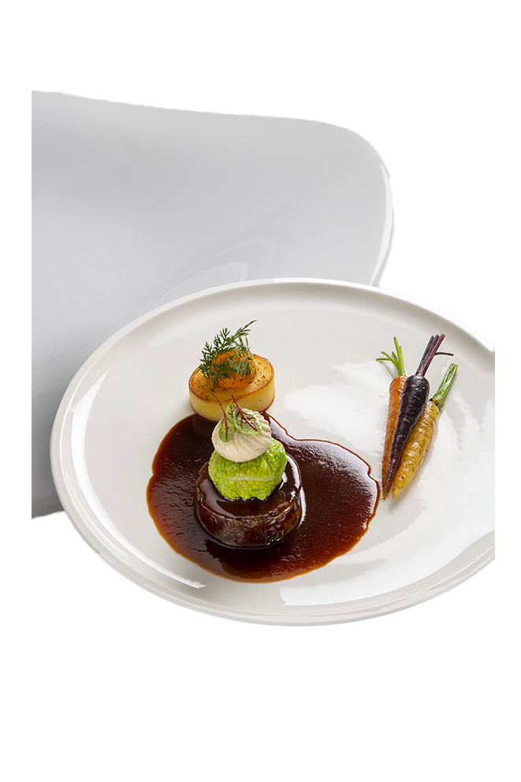
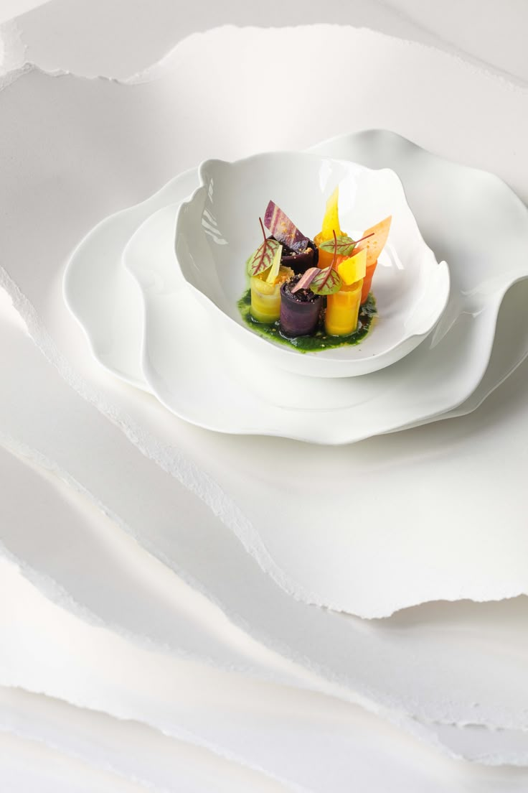

Au Jardin Gourmand, la cuisine se fait poésie et voyage des sens.
Venez savourer une expérience où l’élégance rencontre la convivialité.


Découvrez le Jardin Gourmand
Plongez dans un univers où saveurs et créativité se rencontrent. Notre
cuisine, raffinée mais accessible, sublime les produits de saison pour
offrir des plats qui éveillent les sens. Dans une ambiance chaleureuse
et élégante, chaque repas devient un moment unique à partager.